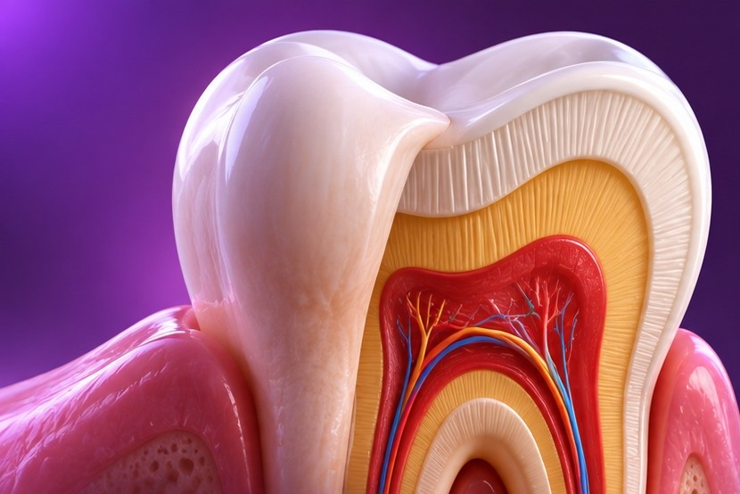
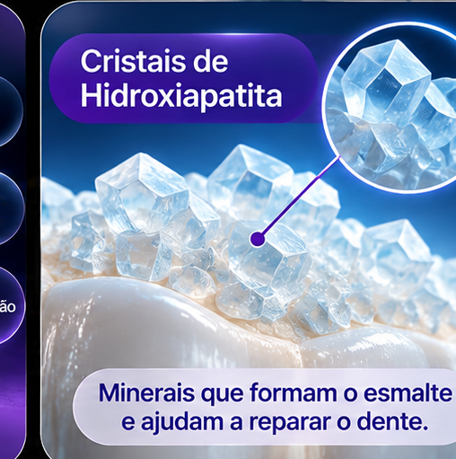
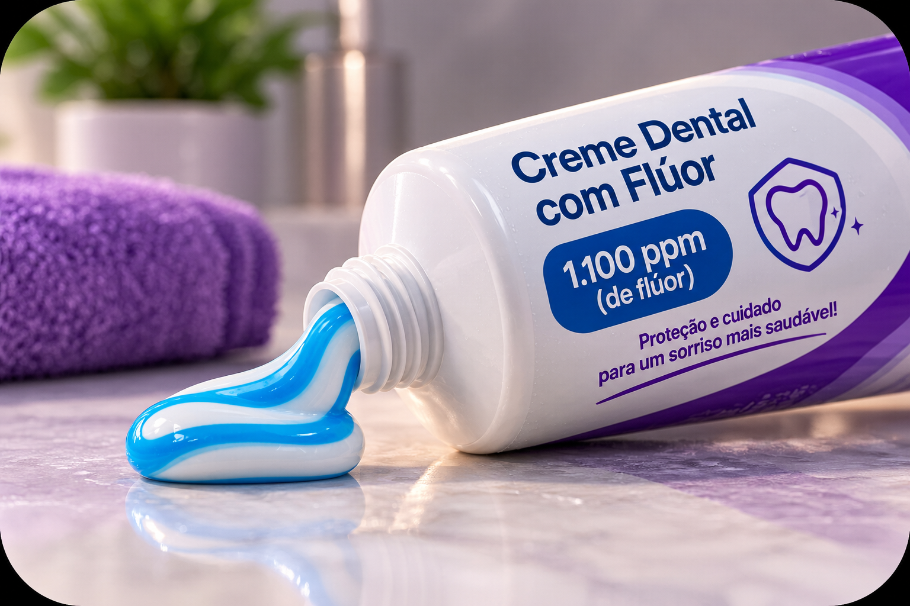

🦷 Da cárie à endodontia
Biofilme, desmineralização, dentina, alterações pulpares, necrose e tratamento de canal — sem confundir as etapas.
Estudar o tema →Os mesmos temas, agora com explicações sobre anatomia, evolução das doenças, prevenção e possibilidades de tratamento.

Biofilme, desmineralização, dentina, alterações pulpares, necrose e tratamento de canal — sem confundir as etapas.
Estudar o tema →
Entenda como os ácidos favorecem a perda de minerais e o papel protetor do flúor.
Ver conteúdo →
Escovação, limpeza interdental, língua, creme dental com flúor e quantidade conforme a idade.
Ver orientações →Próteses fixas, parciais, totais e sobre implantes: indicações e cuidados.
Explorar próteses →